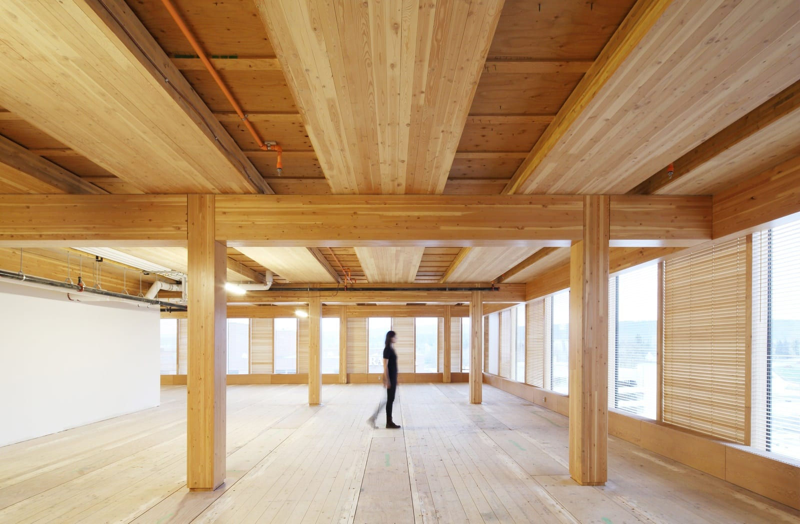

Architectonische Precisie & Duurzame Integratie
Wij ontwerpen interieurs die functionaliteit, esthetiek en structurele duurzaamheid verenigen, met een diepgaande kennis van materiaalkunde en bouwtechniek.
Advies aanvragen
Materiaalkunde & Constructieve Toepassingen
Innovatieve en duurzame oplossingen voor elk project



Klaar voor een technisch onderbouwd ontwerp?
Neem contact op voor een gedegen analyse en een duurzaam projectplan.
Stuur een e-mail